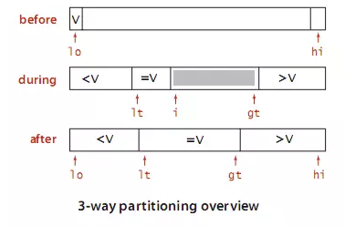

<!DOCTYPE html><html><head><meta name="generator" content="Hexo 3.8.0"><meta charset="utf-8"><title>排序算法之快速排序 | 嘀嗒嘀嗒</title><meta name="viewport" content="width=device-width,initial-scale=1,maximum-scale=1"><meta name="keywords" content="排序算法"><meta property="og:type" content="article"><meta property="og:title" content="排序算法之快速排序"><meta property="og:url" content="https://bilicat.top/post/77638675.html"><meta property="og:site_name" content="嘀嗒嘀嗒"><meta property="og:locale" content="default"><meta property="og:image" content="https://bilicat.top/img/quicksort3way.png"><meta property="og:updated_time" content="2019-03-20T02:47:52.369Z"><meta name="twitter:card" content="summary"><meta name="twitter:title" content="排序算法之快速排序"><meta name="twitter:image" content="https://bilicat.top/img/quicksort3way.png"><link rel="alternate" href="/atom.xml" title="嘀嗒嘀嗒" type="application/atom+xml"><link rel="icon" href="/images/md_logo.png"><link href="//fonts.googleapis.com/css?family=Source+Code+Pro" rel="stylesheet"><link rel="stylesheet" href="/css/style.css"><link rel="stylesheet" href="/css/highlight.css"></head></html><body><div id="fullpage" class="mobile-nav-right"><div id="wrapper" title="背景图片来自网络"><header id="header"><div id="nav-toggle" class="nav-toggle"></div><div class="head-box global-width"><nav class="nav-box nav-right"><a class="nav-item" href="/">首页</a> <a class="nav-item" href="/archives">归档</a> <a class="nav-item" href="https://github.com/blueberryc">Github</a></nav></div></header><div id="middlecontent" class="global-width sidebar-right"><section id="main"><article id="post-排序算法之快速排序" class="article global-container article-type-post" itemscope itemprop="blogPost"><header class="article-header"><h1 class="article-title" itemprop="name">排序算法之快速排序</h1></header><div class="article-meta"><a href="/post/77638675.html" class="article-date"><time datetime="2019-03-20T02:27:53.000Z" itemprop="datePublished">2019-03-20</time></a><div class="article-category"><a class="article-category-link" href="/categories/算法/">算法</a></div><ul class="article-tag-list"><li class="article-tag-list-item"><a class="article-tag-list-link" href="/tags/排序算法/">排序算法</a></li></ul></div><span id="busuanzi_container_page_pv">本文总阅读量<span id="busuanzi_value_page_pv"></span>次</span><div class="article-inner"><div class="article-content article-content-doorframe" itemprop="articleBody"><p>基于分而治之的思想，算法的步骤如下：</p><ol><li><p>从待排序的序列中选择一个元素作为基准元素（<code>pivot</code>）</p></li><li><p>基于基准元素重新排序序列，所有比基准小的元素排放在基准前面，比基准大的元素排放在基准后面。这成为分割操作（<code>partition</code>）</p></li><li>递归地将基准前和基准后的两个子序列进行排序，重复步骤1,2</li></ol><p>快速排序在每次选择的基准都是序列中的最大值或最小值时，会出现最坏情况。因此可以先对每次待排序的数据进行<code>shuffle</code>操作。</p><div class="highlight-box" autocomplete="off" autocorrect="off" autocapitalize="off" spellcheck="false" contenteditable="true" data-rel="PYTHON"><figure class="iseeu highlight /python"><table><tr><td class="gutter"><pre><span class="line">1</span><br><span class="line">2</span><br><span class="line">3</span><br><span class="line">4</span><br><span class="line">5</span><br><span class="line">6</span><br><span class="line">7</span><br><span class="line">8</span><br><span class="line">9</span><br><span class="line">10</span><br><span class="line">11</span><br><span class="line">12</span><br><span class="line">13</span><br><span class="line">14</span><br><span class="line">15</span><br><span class="line">16</span><br><span class="line">17</span><br><span class="line">18</span><br><span class="line">19</span><br><span class="line">20</span><br><span class="line">21</span><br><span class="line">22</span><br><span class="line">23</span><br><span class="line">24</span><br><span class="line">25</span><br><span class="line">26</span><br><span class="line">27</span><br><span class="line">28</span><br><span class="line">29</span><br><span class="line">30</span><br><span class="line">31</span><br><span class="line">32</span><br><span class="line">33</span><br><span class="line">34</span><br><span class="line">35</span><br><span class="line">36</span><br><span class="line">37</span><br><span class="line">38</span><br><span class="line">39</span><br></pre></td><td class="code"><pre><span class="line"><span class="function"><span class="keyword">def</span> <span class="title">quickSort</span><span class="params">(arr, low, high)</span>:</span></span><br><span class="line">    <span class="keyword">if</span> (low &lt; high):</span><br><span class="line">    	<span class="comment"># 找到基准元素的正确位置，分割序列</span></span><br><span class="line">    	pi = partition(arr, low, high)</span><br><span class="line">    	<span class="comment"># 递归对分割的两个子序列进行排序</span></span><br><span class="line">    	quickSort(arr, low, pi<span class="number">-1</span>)</span><br><span class="line">    	quickSort(arr, pi+<span class="number">1</span>, high)</span><br><span class="line">    </span><br><span class="line"><span class="comment"># 方法一</span></span><br><span class="line"><span class="function"><span class="keyword">def</span> <span class="title">partition</span><span class="params">(arr, low, high)</span>:</span></span><br><span class="line">    <span class="comment"># 以开始的元素为基准</span></span><br><span class="line">    pivot = arr[low]</span><br><span class="line">    i = low</span><br><span class="line">    j = high</span><br><span class="line">    <span class="keyword">while</span> i &lt; j:</span><br><span class="line">        <span class="comment"># 从右到左，找到不大于基准的元素</span></span><br><span class="line">        <span class="keyword">while</span> (i &lt; j <span class="keyword">and</span> arr[j] &gt; pivot):</span><br><span class="line">            j -= <span class="number">1</span></span><br><span class="line">            <span class="comment"># 从左到右，找到不小于等于基准的元素。注意要设置为 &lt;= </span></span><br><span class="line">        <span class="keyword">while</span> (i &lt;j <span class="keyword">and</span> arr[i] &lt;= pivot):</span><br><span class="line">            i += <span class="number">1</span></span><br><span class="line">            <span class="comment"># 交换两个元素的位置</span></span><br><span class="line">        <span class="keyword">if</span> (i &lt; j):</span><br><span class="line">            arr[i], arr[j] = arr[j], arr[i]</span><br><span class="line">        <span class="comment"># 交换基准元素和最终的指针位置</span></span><br><span class="line">    arr[low], arr[j] = arr[j], pivot</span><br><span class="line">    <span class="keyword">return</span> j</span><br><span class="line">    </span><br><span class="line"><span class="comment"># 方法二</span></span><br><span class="line"><span class="function"><span class="keyword">def</span> <span class="title">partition1</span><span class="params">(arr, low, high)</span>:</span></span><br><span class="line">    i = low - <span class="number">1</span></span><br><span class="line">    <span class="comment"># 以最后的元素为基准</span></span><br><span class="line">    pivot = arr[high]</span><br><span class="line">    <span class="keyword">for</span> j <span class="keyword">in</span> range(low, high):</span><br><span class="line">        <span class="keyword">if</span> (arr[j] &lt;= pivot):</span><br><span class="line">            i += <span class="number">1</span></span><br><span class="line">            arr[i], arr[j] = arr[j], arr[i]</span><br><span class="line">    arr[i + <span class="number">1</span>], arr[high] = arr[high], arr[i + <span class="number">1</span>]</span><br><span class="line">    <span class="keyword">return</span> i + <span class="number">1</span></span><br></pre></td></tr></table></figure></div><hr><h2 id="算法改进"><a href="#算法改进" class="headerlink" title="算法改进"></a>算法改进</h2><h3 id="改进思路一：切换到插入排序"><a href="#改进思路一：切换到插入排序" class="headerlink" title="改进思路一：切换到插入排序"></a>改进思路一：切换到插入排序</h3><p>当数组的长度小于某个值的时候，使用插入排序</p><div class="highlight-box" autocomplete="off" autocorrect="off" autocapitalize="off" spellcheck="false" contenteditable="true" data-rel="PYTHON"><figure class="iseeu highlight /python"><table><tr><td class="gutter"><pre><span class="line">1</span><br><span class="line">2</span><br><span class="line">3</span><br><span class="line">4</span><br><span class="line">5</span><br><span class="line">6</span><br><span class="line">7</span><br><span class="line">8</span><br><span class="line">9</span><br><span class="line">10</span><br><span class="line">11</span><br><span class="line">12</span><br><span class="line">13</span><br><span class="line">14</span><br><span class="line">15</span><br><span class="line">16</span><br><span class="line">17</span><br><span class="line">18</span><br></pre></td><td class="code"><pre><span class="line"><span class="function"><span class="keyword">def</span> <span class="title">quickSort</span><span class="params">(arr, low, high)</span>:</span></span><br><span class="line">    <span class="comment"># 数组长度小于等于6的时候，使用插入排序</span></span><br><span class="line">    <span class="keyword">if</span> high - low + <span class="number">1</span> &lt;= <span class="number">6</span>:</span><br><span class="line">        insertSort(arr, low, high)</span><br><span class="line">        <span class="keyword">return</span></span><br><span class="line">    pi = partition(arr, low, high)</span><br><span class="line">    quickSort(arr, low, pi - <span class="number">1</span>) </span><br><span class="line">    quickSort(arr, pi + <span class="number">1</span>, high)</span><br><span class="line"></span><br><span class="line"><span class="function"><span class="keyword">def</span> <span class="title">insertSort</span><span class="params">(arr, low, high)</span>:</span></span><br><span class="line">    <span class="keyword">if</span> high &lt;= low:</span><br><span class="line">        <span class="keyword">return</span></span><br><span class="line">    <span class="keyword">for</span> i <span class="keyword">in</span> range(low + <span class="number">1</span>, high + <span class="number">1</span>):</span><br><span class="line">        <span class="comment"># low ~ i-1 的元素已排好序的</span></span><br><span class="line">        <span class="keyword">for</span> j <span class="keyword">in</span> range(i, low, <span class="number">-1</span>):</span><br><span class="line">            <span class="comment"># 如果比前面的元素小，就将元素往前移动</span></span><br><span class="line">            <span class="keyword">if</span> (arr[j] &lt; arr[j - <span class="number">1</span>]):</span><br><span class="line">                arr[j], arr[j - <span class="number">1</span>] = arr[j - <span class="number">1</span>], arr[j]</span><br></pre></td></tr></table></figure></div><hr><h3 id="改进思路二：三路快速排序"><a href="#改进思路二：三路快速排序" class="headerlink" title="改进思路二：三路快速排序"></a>改进思路二：三路快速排序</h3><p>主要解决序列中含有大量重复元素的情况，将待排序的序列划分为三个子序列，第一个子序列为小于基准的元素，第二个子序列为等于基准的元素，第三个子序列为大于基准的元素。</p><p>主要的改进部分为对序列的切分，对于每次切分，序列从左到右遍历一次，维护三个指针<code>lt</code>、<code>gt</code>和<code>i</code>。其中：</p><ul><li><code>lt</code>指针使得元素（<code>arr[low]~arr[lt-1]</code>）的值均小于基准元素</li><li><code>gt</code>指针使得元素（<code>arr[gt+1]~arr[high]</code>）的值均大于基准元素</li><li><code>i</code>指针使得元素（<code>arr[lt]~arr[i-1]</code>）的元素均等于基准元素，（<code>arr[i]~arr[gt]</code>）的元素为未扫描的元素，切分算法直到<code>i&gt;gt</code>为止。</li></ul><p></p><div class="highlight-box" autocomplete="off" autocorrect="off" autocapitalize="off" spellcheck="false" contenteditable="true" data-rel="PYTHON"><figure class="iseeu highlight /python"><table><tr><td class="gutter"><pre><span class="line">1</span><br><span class="line">2</span><br><span class="line">3</span><br><span class="line">4</span><br><span class="line">5</span><br><span class="line">6</span><br><span class="line">7</span><br><span class="line">8</span><br><span class="line">9</span><br><span class="line">10</span><br><span class="line">11</span><br><span class="line">12</span><br><span class="line">13</span><br><span class="line">14</span><br><span class="line">15</span><br><span class="line">16</span><br><span class="line">17</span><br><span class="line">18</span><br><span class="line">19</span><br><span class="line">20</span><br><span class="line">21</span><br><span class="line">22</span><br><span class="line">23</span><br><span class="line">24</span><br><span class="line">25</span><br><span class="line">26</span><br></pre></td><td class="code"><pre><span class="line"><span class="function"><span class="keyword">def</span> <span class="title">quick3waySort</span><span class="params">(arr, low, high)</span>:</span></span><br><span class="line">    <span class="keyword">if</span> high &lt;= low:</span><br><span class="line">        <span class="keyword">return</span></span><br><span class="line">    lt, gt = partition3way(arr, low, high)</span><br><span class="line">    quick3waySort(arr, low, lt - <span class="number">1</span>)</span><br><span class="line">    quick3waySort(arr, gt + <span class="number">1</span>, high)</span><br><span class="line">    </span><br><span class="line"><span class="function"><span class="keyword">def</span> <span class="title">partition3way</span><span class="params">(arr, low, high)</span>:</span></span><br><span class="line">    pivot = arr[low]</span><br><span class="line">    lt = low</span><br><span class="line">    gt = high</span><br><span class="line">    i = low + <span class="number">1</span>  <span class="comment"># 第一个元素为切分元素，所以指针从第二个元素开始</span></span><br><span class="line">    <span class="keyword">while</span> (i &lt;= gt):</span><br><span class="line">        <span class="comment"># 小于基准元素的放到 lt 指针左边，因此指针 lt 和 i 整体右移</span></span><br><span class="line">        <span class="keyword">if</span> (arr[i] &lt; pivot):</span><br><span class="line">            arr[lt], arr[i] = arr[i], arr[lt]</span><br><span class="line">            i += <span class="number">1</span></span><br><span class="line">            lt += <span class="number">1</span></span><br><span class="line">        <span class="comment"># 大于基准元素的放到 gt 指针右边，因此指针 gt 左移</span></span><br><span class="line">        <span class="comment"># 因为交换过来的元素是未遍历的，所以不能设置 i += 1</span></span><br><span class="line">        <span class="keyword">elif</span> (arr[i] &gt; pivot):</span><br><span class="line">            arr[i], arr[gt] = arr[gt], arr[i]</span><br><span class="line">            gt -= <span class="number">1</span></span><br><span class="line">        <span class="keyword">else</span>:</span><br><span class="line">            i += <span class="number">1</span></span><br><span class="line">    <span class="keyword">return</span> lt, gt</span><br></pre></td></tr></table></figure></div><hr><h3 id="改进思路三：迭代形式的快速排序"><a href="#改进思路三：迭代形式的快速排序" class="headerlink" title="改进思路三：迭代形式的快速排序"></a>改进思路三：迭代形式的快速排序</h3><div class="highlight-box" autocomplete="off" autocorrect="off" autocapitalize="off" spellcheck="false" contenteditable="true" data-rel="PYTHON"><figure class="iseeu highlight /python"><table><tr><td class="gutter"><pre><span class="line">1</span><br><span class="line">2</span><br><span class="line">3</span><br><span class="line">4</span><br><span class="line">5</span><br><span class="line">6</span><br><span class="line">7</span><br><span class="line">8</span><br><span class="line">9</span><br><span class="line">10</span><br><span class="line">11</span><br><span class="line">12</span><br><span class="line">13</span><br><span class="line">14</span><br><span class="line">15</span><br><span class="line">16</span><br><span class="line">17</span><br><span class="line">18</span><br><span class="line">19</span><br><span class="line">20</span><br><span class="line">21</span><br><span class="line">22</span><br><span class="line">23</span><br><span class="line">24</span><br><span class="line">25</span><br><span class="line">26</span><br><span class="line">27</span><br><span class="line">28</span><br><span class="line">29</span><br><span class="line">30</span><br><span class="line">31</span><br><span class="line">32</span><br><span class="line">33</span><br><span class="line">34</span><br><span class="line">35</span><br></pre></td><td class="code"><pre><span class="line"><span class="function"><span class="keyword">def</span> <span class="title">quickSortIterative</span><span class="params">(arr, low, high)</span>:</span></span><br><span class="line">    <span class="keyword">if</span> (high &lt;= low):</span><br><span class="line">        <span class="keyword">return</span></span><br><span class="line">    <span class="comment"># 建立辅助栈</span></span><br><span class="line">    size = high - low + <span class="number">1</span></span><br><span class="line">    stack = [<span class="number">0</span>] * (size)</span><br><span class="line">    <span class="comment"># 初始化栈顶</span></span><br><span class="line">    top = <span class="number">-1</span></span><br><span class="line">    <span class="comment"># 序列的头尾索引入栈</span></span><br><span class="line">    top = top + <span class="number">1</span></span><br><span class="line">    stack[top] = low</span><br><span class="line">    top = top + <span class="number">1</span></span><br><span class="line">    stack[top] = high</span><br><span class="line"></span><br><span class="line">    <span class="keyword">while</span> top &gt;= <span class="number">0</span>:</span><br><span class="line">        <span class="comment"># 弹出序列的尾和头</span></span><br><span class="line">        high = stack[top]</span><br><span class="line">        top -= <span class="number">1</span></span><br><span class="line">        low = stack[top]</span><br><span class="line">        top -= <span class="number">1</span></span><br><span class="line"></span><br><span class="line">        <span class="comment"># 分割序列，找到正确的基准元素位置</span></span><br><span class="line">        p = partition(arr, low, high)</span><br><span class="line"></span><br><span class="line">        <span class="comment"># 如果基准元素左边还有元素，将左边的序列入栈</span></span><br><span class="line">        <span class="keyword">if</span> p - <span class="number">1</span> &gt; low:</span><br><span class="line">            top += <span class="number">1</span></span><br><span class="line">            stack[top] = low</span><br><span class="line">            top += <span class="number">1</span></span><br><span class="line">            stack[top] = p - <span class="number">1</span></span><br><span class="line">        <span class="keyword">if</span> p + <span class="number">1</span> &lt; high:</span><br><span class="line">            top += <span class="number">1</span></span><br><span class="line">            stack[top] = p + <span class="number">1</span></span><br><span class="line">            top += <span class="number">1</span></span><br><span class="line">            stack[top] = high</span><br></pre></td></tr></table></figure></div></div><footer class="article-footer">完</footer></div><nav id="article-nav"><div class="article-nav-block"></div><div class="article-nav-block"><a href="/post/2588d803.html" id="article-nav-older" class="article-nav-link-wrap"><div class="article-nav-title">逻辑回归(LR)</div><strong class="article-nav-caption"></strong></a></div></nav><div id="vcomment" class="comment"></div><script src="//cdn1.lncld.net/static/js/3.0.4/av-min.js"></script><script src="//unpkg.com/valine/dist/Valine.min.js"></script><script>var notify=!1,verify=!1;window.onload=function(){new Valine({el:".comment",notify:notify,verify:verify,app_id:"WUCiaFFoiTM9hj5tkIme0cfM-gzGzoHsz",app_key:"SbVNeAEzvwec8w1ChRGzxjUH",placeholder:"谢谢大家的指正",avatar:"mm"})}</script></article></section><aside id="sidebar"><div class="widget-box"><div class="avatar-box"><h3 class="avatar-name">不期而遇</h3><p class="avatar-slogan">迷途研二狗，酱油算法攻城狮。</p></div></div><div class="widget-box"><h3 class="widget-title">Categories</h3><div class="widget"><ul class="category-list"><li class="category-list-item"><a class="category-list-link" href="/categories/LeetCode/">LeetCode</a></li><li class="category-list-item"><a class="category-list-link" href="/categories/机器学习/">机器学习</a></li><li class="category-list-item"><a class="category-list-link" href="/categories/算法/">算法</a></li></ul></div></div><div class="widget-box"><h3 class="widget-title">Tag Cloud</h3><div class="widget tagcloud"><a href="/tags/LeetCode/" style="font-size:10px">LeetCode</a> <a href="/tags/决策树/" style="font-size:10px">决策树</a> <a href="/tags/排序算法/" style="font-size:10px">排序算法</a> <a href="/tags/机器学习/" style="font-size:20px">机器学习</a> <a href="/tags/滑动窗口/" style="font-size:10px">滑动窗口</a> <a href="/tags/逻辑回归/" style="font-size:10px">逻辑回归</a></div></div><div class="widget-box"><h3 class="widget-title">Archives</h3><div class="widget"><ul class="archive-list"><li class="archive-list-item"><a class="archive-list-link" href="/archives/2019/03/">March 2019</a></li></ul></div></div><div class="widget-box"><h3 class="widget-title">Recent Posts</h3><div class="widget"><ul><li><a href="/post/77638675.html">排序算法之快速排序</a></li><li><a href="/post/2588d803.html">逻辑回归(LR)</a></li><li><a href="/post/8a68f099.html">机器学习之数据预处理</a></li><li><a href="/post/49ee0893.html">LeetCode209-最短子数组之和</a></li><li><a href="/post/506d299f.html">信息熵与决策树</a></li></ul></div></div></aside></div><footer id="footer"><div class="foot-box global-width">&copy; 2019 凌度 &nbsp;&nbsp; Powered by <a href="http://hexo.io/" target="_blank">Hexo</a> &nbsp;|&nbsp;主题 <a href="https://github.com/yiluyanxia/hexo-theme-antiquity">antiquity</a><br><script async src="//busuanzi.ibruce.info/busuanzi/2.3/busuanzi.pure.mini.js"></script><span id="busuanzi_container_site_pv">阁下是第<span id="busuanzi_value_site_pv"></span>个访客</span></div></footer><script src="//ajax.googleapis.com/ajax/libs/jquery/2.0.3/jquery.min.js"></script><script src="/js/jquery-2.0.3.min.js"></script><link rel="stylesheet" href="/fancybox/jquery.fancybox.css"><script src="/fancybox/jquery.fancybox.pack.js"></script><script src="/js/script.js"></script></div><nav id="mobile-nav" class="mobile-nav-box"><div class="mobile-nav-img mobile-nav-top"></div><a href="/" class="mobile-nav-link">首页</a> <a href="/archives" class="mobile-nav-link">归档</a> <a href="https://github.com/blueberryc" class="mobile-nav-link">Github</a><div class="mobile-nav-img mobile-nav-bottom"></div></nav></div><script type="text/x-mathjax-config">MathJax.Hub.Config({
        tex2jax: {
            inlineMath: [ ["$","$"], ["\\(","\\)"] ],
            skipTags: ['script', 'noscript', 'style', 'textarea', 'pre', 'code'],
            processEscapes: true
        }
    });
    MathJax.Hub.Queue(function() {
        var all = MathJax.Hub.getAllJax();
        for (var i = 0; i < all.length; ++i)
            all[i].SourceElement().parentNode.className += ' has-jax';
    });</script><script src="https://cdnjs.cloudflare.com/ajax/libs/mathjax/2.7.1/MathJax.js?config=TeX-MML-AM_CHTML"></script></body>